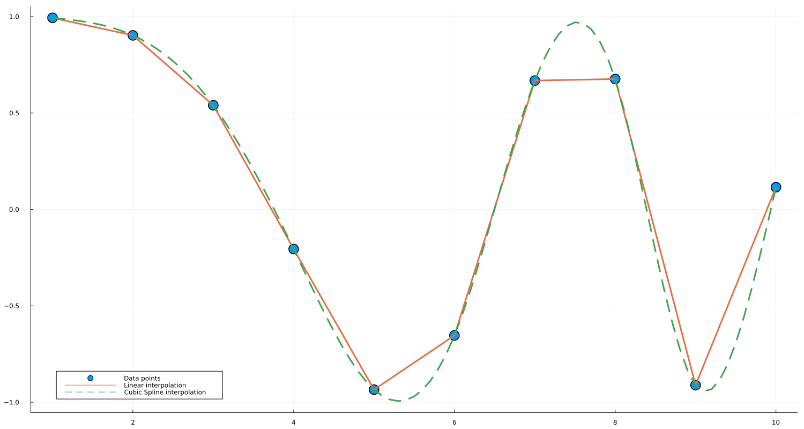

Convenience notation
For constant, linear, and cubic spline interpolations, constant_interpolation, linear_interpolation, and cubic_spline_interpolation can be used to create interpolating and extrapolating objects handily.
Motivating Example
By using the convenience constructor one can simplify expressions. For example, the creation of an interpolation object
extrap_full = extrapolate(scale(interpolate(A, BSpline(Linear())), xs), Line())can be written as the more readable
extrap = linear_interpolation(xs, A, extrapolation_bc = Line())by using the convenience constructor.
Usage
f(x) = log(x)
xs = 1:0.2:5
A = [f(x) for x in xs]
# linear interpolation
interp_linear = linear_interpolation(xs, A)
interp_linear(3) # exactly log(3)
interp_linear(3.1) # approximately log(3.1)
# cubic spline interpolation
interp_cubic = cubic_spline_interpolation(xs, A)
interp_cubic(3) # exactly log(3)
interp_cubic(3.1) # approximately log(3.1)which support multidimensional data as well:
f(x,y) = log(x+y)
xs = 1:0.2:5
ys = 2:0.1:5
A = [f(x,y) for x in xs, y in ys]
# linear interpolation
interp_linear = linear_interpolation((xs, ys), A)
interp_linear(3, 2) # exactly log(3 + 2)
interp_linear(3.1, 2.1) # approximately log(3.1 + 2.1)
# cubic spline interpolation
interp_cubic = cubic_spline_interpolation((xs, ys), A)
interp_cubic(3, 2) # exactly log(3 + 2)
interp_cubic(3.1, 2.1) # approximately log(3.1 + 2.1)For extrapolation, i.e., when interpolation objects are evaluated in coordinates outside the range provided in constructors, the default option for a boundary condition is Throw so that they will return an error. Interested users can specify boundary conditions by providing an extra parameter for extrapolation_bc:
f(x) = log(x)
xs = 1:0.2:5
A = [f(x) for x in xs]
# extrapolation with linear boundary conditions
extrap = linear_interpolation(xs, A, extrapolation_bc = Line())
@test extrap(1 - 0.2) # ≈ f(1) - (f(1.2) - f(1))
@test extrap(5 + 0.2) # ≈ f(5) + (f(5) - f(4.8))You can also use a "fill" value, which gets returned whenever you ask for out-of-range values:
extrap = linear_interpolation(xs, A, extrapolation_bc = NaN)
@test isnan(extrap(5.2))Irregular grids are supported as well; note that presently only constant_interpolation and linear_interpolation supports irregular grids.
xs = [x^2 for x = 1:0.2:5]
A = [f(x) for x in xs]
# linear interpolation
interp_linear = linear_interpolation(xs, A)
interp_linear(1) # exactly log(1)
interp_linear(1.05) # approximately log(1.05)Example with Plots.jl
An interpolated object is also easily capable of being plotted with Plots.jl. A simple example is as follows:
using Interpolations, Plots
# Lower and higher bound of interval
a = 1.0
b = 10.0
# Interval definition
x = a:1.0:b
# This can be any sort of array data, as long as
# length(x) == length(y)
y = @. cos(x^2 / 9.0) # Function application by broadcasting
# Interpolations
itp_linear = linear_interpolation(x, y)
itp_cubic = cubic_spline_interpolation(x, y)
# Interpolation functions
f_linear(x) = itp_linear(x)
f_cubic(x) = itp_cubic(x)
# Plots
width, height = 1500, 800 # not strictly necessary
x_new = a:0.1:b # smoother interval, necessary for cubic spline
scatter(x, y, markersize=10,label="Data points")
plot!(f_linear, x_new, w=3,label="Linear interpolation")
plot!(f_cubic, x_new, linestyle=:dash, w=3, label="Cubic Spline interpolation")
plot!(size = (width, height))
plot!(legend = :bottomleft)And the generated plot is: 